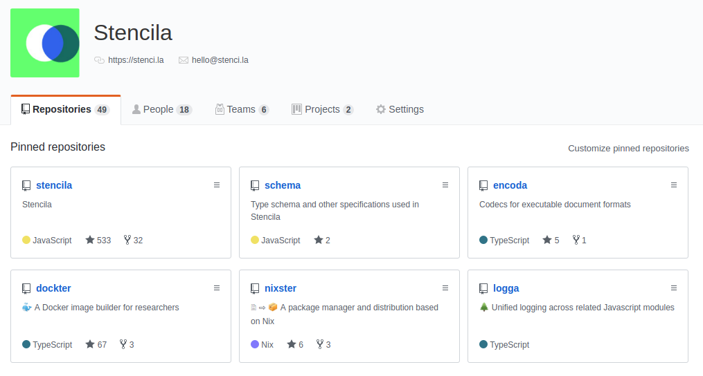
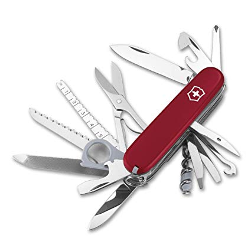

class: center, middle ## Community Call <img src="logo-name.svg" width="300" /> #### Zoom room https://zoom.us/j/655391807 #### 3/4 June 2019 <div> <a href="https://twitter.com/stencila">@stencila</a> </div> <p style="position: absolute; bottom: 10px; font-size: 10px">Press <code>P</code> to switch to presenter mode</p> --- ### Agenda - **Ben Shaw:** Hub enhancements and integrations with Stencila Encoda (previously Stencila Converter); - **Nokome Bentley:** Updates on Stencila CLI; - **Jacqueline Wijaya:** GSuite Add-on designs; - **Alex Ketch:** Style repo updates; --- class: center, middle ## Ben --- class: center, middle ## Nokome --- class: center, middle > Small sharp tools. Composability. Simple tools which do one thing well and can be composed with other tools to create a nearly infinite number of results. > > Adam Wiggins - [Adam's Heroku Values](https://gist.github.com/adamwiggins/5687294) --- class: center, middle <img src="https://www.sakwiki.com/show_image.php?id=294" width=300 /> --- class: center, middle  --- class: center, middle  --- class: center, middle ``` > stencila --help stencila <cmd> [args] Commands: stencila convert [input] [output] Convert between file formats stencila process [input] [output] Process content stencila serve [folder] Serve a project folder Options: --help, -h Show help [boolean] --version, -v Show version [boolean] ``` --- class: center, middle ## Alex --- class: center, middle ## Jacqueline --- ### GSuite Add-on Designs (Flows 1-4) - Sign in using the Google Add-on. - Linking your Stencila project. - Add a code block using the side bar. - Using the Add-on menu to add a code block. --- ### GSuite Add-on Designs (Flows 1-4)  --- ### GSuite Add-on Designs (Flows 5-7) - Edit a code block using the side bar. - Using the Add-on menu to edit the code block. - View a data file, then add one. --- ### GSuite Add-on Designs (Flows 5-7)  --- ### GSuite Add-on Designs (Flows 8-10) - Publish a document on Stencila. - Stop sharing the published project. - Convert an Rmd into a Google Doc. --- ### GSuite Add-on Designs (Flows 8-10)  --- class: center, middle ## Alex --- ### Beta Test Demographic Questionnaire  - [Take the demographic questionnaire to participate in a user study.](https://forms.gle/s1zbDL3fEdcyW5Zf6) --- ### Help wanted! You can help by: - 📬 Sign up to [become a Stencila Hub Beta Tester](https://forms.gle/s1zbDL3fEdcyW5Zf6)